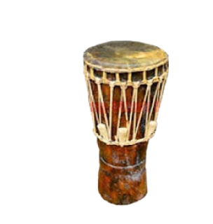

Kalimantan Barat

Gambar diatas adalah Tuma, Tuma memang seperti gendang pada umumnya. Tuma memiliki panjang sekitar 75 cm sehingga disebut sebagai gendang panjang. Cara memainkannya adalah dipukul. Untuk bagian membrannya memakai kulit kambing atau kulit kijang muda. Orang yang memainkan Tuma disebut dadalang atau dadalan